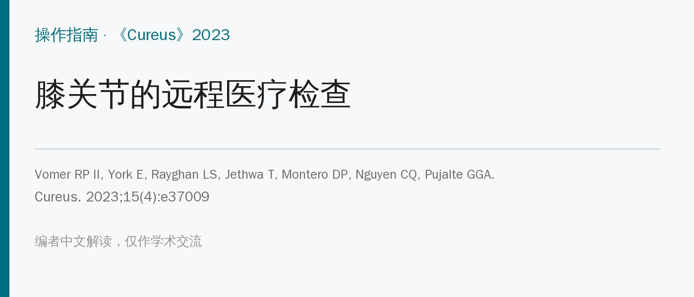
🔖原文信息（编者中文重排）
📚 文献信息
▪ Vomer RP II, York E, Rayghan LS, Jethwa T, Montero DP, Nguyen CQ, Pujalte GGA. Telemedicine Examination of the Knee. Cureus. 2023;15(4):e37009. doi:10.7759/cureus.37009
▪ 作者单位：美国杜克大学运动医学科、梅奥诊所杰克逊维尔院区、东弗吉尼亚医学院
▪ 文章类型：操作指南（期刊标为原创研究，但没有受试者和数据），图中模特为作者之一
新冠疫情让远程医疗在基层迅速普及。膝关节是最常受伤的关节之一，膝痛也是基层最常见的问题之一；视频问诊恰好提供了一个“窗口”，能直接看到患者在自己家里怎么活动，评估跌倒风险和是否需要助行器。
难点在于：远程检查没法徒手测肌力，也没法做传统的特殊检查，疼痛时的非语言线索也看不清，查体全靠患者自己做。目前缺少标准化流程，作者因此给出一套一步一步的远程膝关节检查方案，并配了每个动作的照片和“问什么、答案意味着什么”的表格。
这是一份操作指南：作者按传统膝关节查体的顺序（视诊、触诊、活动度、肌力、特殊检查），把每一步改成患者在镜头前能自己完成的动作和问题，由一位作者担任模特拍摄示范照片。没有招募患者，也没有和线下查体做对照。
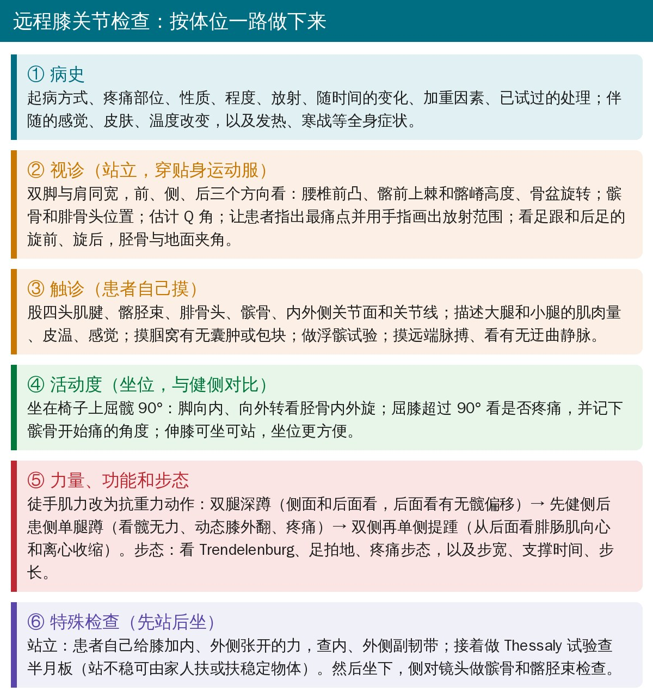
🔖远程膝关节检查的六个环节（编者根据原文整理）
• 让患者穿贴身运动服，双脚与肩同宽站立，镜头能拍到全身
• 按体位顺序做：站立 → 行走 → 站立特殊检查 → 坐位 → 卧位，减少患者来回折腾
• 所有角度只能目测估计，重点是与健侧对比
• 从腰椎到足看整个动力链：腰椎前凸、髂前上棘和髂嵴是否等高、骨盆有无旋转
• 前、侧、后三个方向看髌骨和腓骨头位置，估计 Q 角
• 让患者指出最痛点，并用手指画出疼痛放射的范围
• 看后足旋前或旋后、胫骨与地面的夹角（原文认为 >10° 会改变下肢力学、引起膝痛）
• 从后面看，足外侧露出“脚趾过多”提示足过度旋前
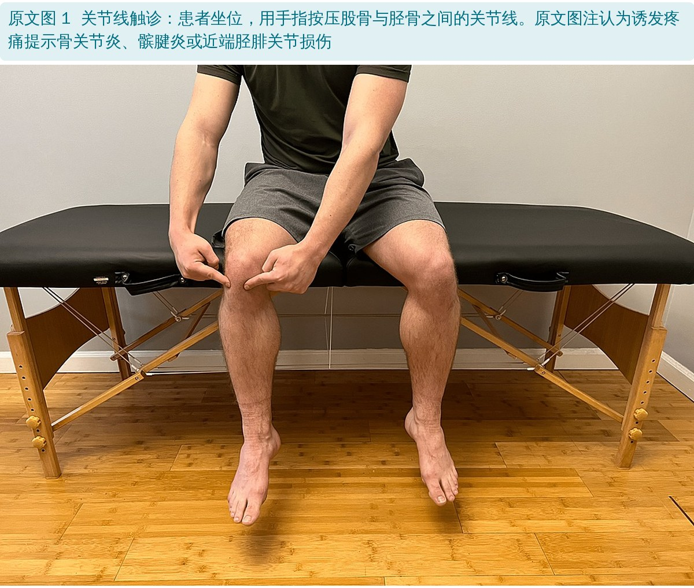
🔖原文图 1：关节线触诊
• 依次按压：股四头肌腱、髂胫束、腓骨头、髌骨、内外侧关节面和关节线，问哪里痛
• 描述大腿、小腿前、内、外侧的肌肉量、皮温和感觉；摸腘窝看有无囊肿或包块
• 自己做浮髌试验：伸直腿，一只手放在髌骨上方，另一只手轻拍膝盖，问有没有“漂浮感”——阳性提示关节积液或积血
• 最后摸远端脉搏，看有无迂曲的静脉淤血
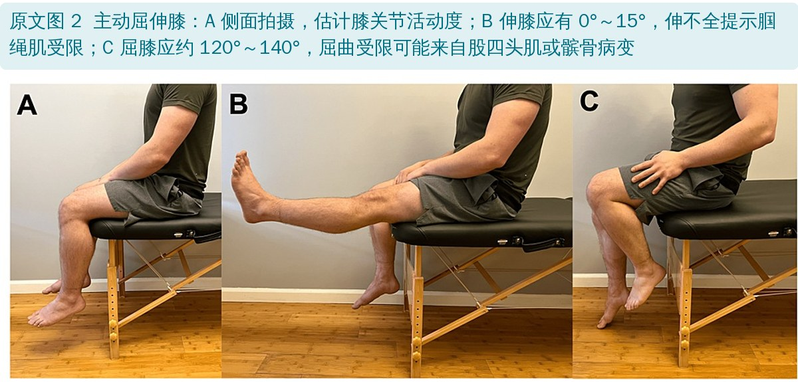
🔖原文图 2：主动屈伸膝
• 坐在椅子上屈髋 90°，脚向内、向外转，看胫骨内、外旋和疼痛
• 同一体位屈膝超过 90°，看是否疼痛，并让患者记下髌骨从哪个角度开始痛
• 伸膝可坐可站，坐位更舒服也更连贯；也可让患者完全放松，用手把膝屈伸一遍，看被动活动度
• 伸膝时观察髌骨轨迹：走出“J”形（J 征）提示髌骨不稳
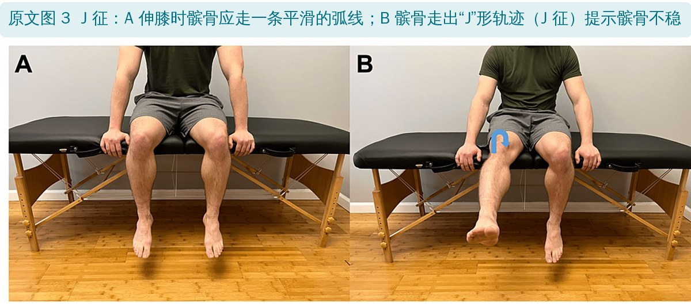
🔖原文图 3：J 征
| 动作 | 正常范围 | 终末感 |
|---|---|---|
| 屈膝 | 0°～140° | 软组织挤压 |
| 伸膝 | 0°～15° | 软组织牵拉 |
| 胫骨外旋 | 30°～40° | 软组织牵拉 |
| 胫骨内旋 | 20°～30° | 软组织牵拉 |
原文表 1：膝关节活动度和可能的终末感（中文翻译）
• 抗重力 = 至少 3/5 级：坐位伸膝（股四头肌）、屈膝（腘绳肌）、提踵（跖屈肌）、侧卧抬上方腿（髋外展肌）、仰卧双腿和单腿桥（髋伸肌）。没有阻力，最多只能判断“至少 3 级”，可结合患者自觉的无力
• 双腿深蹲：从侧面和后面看；后面看髋偏移——偏离某侧髋，提示该侧活动度或力量下降
• 单腿蹲：先健侧建立基线，再做患侧，看髋无力、动态膝外翻和疼痛
• 提踵：先双侧，再单侧（先健侧），从后面看腓肠肌向心和离心收缩
• 步态：让患者朝镜头走来、再走远，看 Trendelenburg 步态、足拍地、疼痛步态，以及步宽、支撑时间、步长；问上下楼、深蹲时是否疼痛或不稳
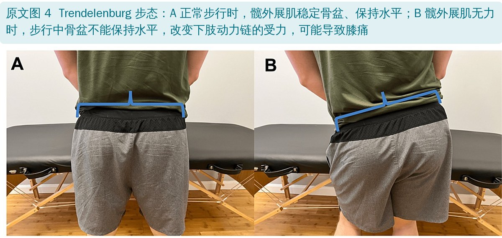
🔖原文图 4：Trendelenburg 步态
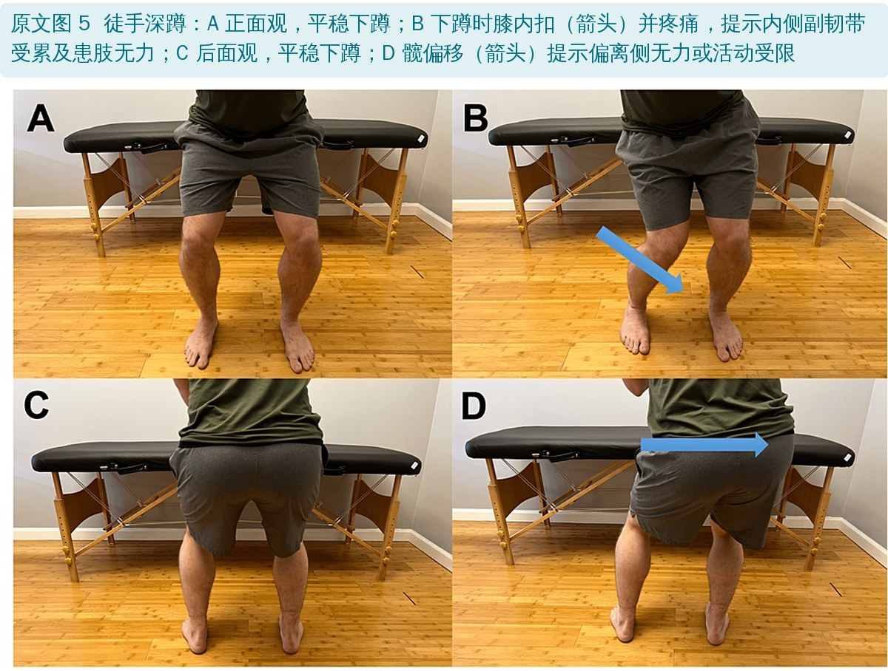
🔖原文图 5：徒手深蹲
• 改良内、外翻应力：站立，让患者自己把膝向内弯（外翻）或向外弯（内翻），受力侧疼痛提示该侧韧带受累
• 改良 Noble 挤压试验：拇指按住髂胫束远端止点（膝外上方），再伸膝，疼痛提示髂胫束综合征或腓骨头功能障碍
• 后沉征：仰卧屈髋屈膝 90°，足跟搁在纸箱上，比较两侧胫骨高度，下沉提示后交叉韧带受累
• 髌骨倾斜试验：伸直腿，试着把髌骨外侧缘从股骨上掀起
• 髌骨挤压试验：伸膝后用手向下压髌骨，疼痛提示髌股关节退变
• 改良 Thomas 试验：坐床边，抱健侧膝到胸前躺下，看患侧：膝伸直（股直肌）、髋屈曲（髂腰肌）、小腿旋转（髂胫束）、髋外展（阔筋膜张肌）
• 改良 Thessaly 试验：患肢单腿站、膝稍屈，把肩膀转向左、右，膝痛提示半月板病变；站不稳可由家人扶或扶稳定物体
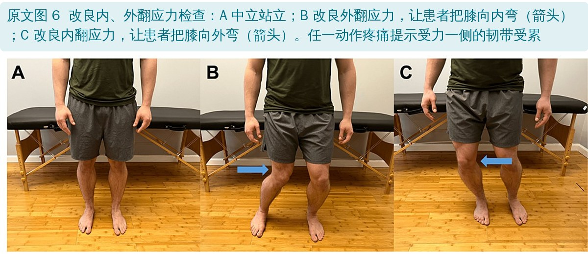
🔖原文图 6：改良内、外翻应力检查
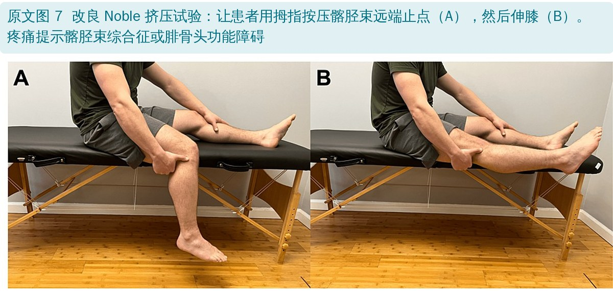
🔖原文图 7：改良 Noble 挤压试验
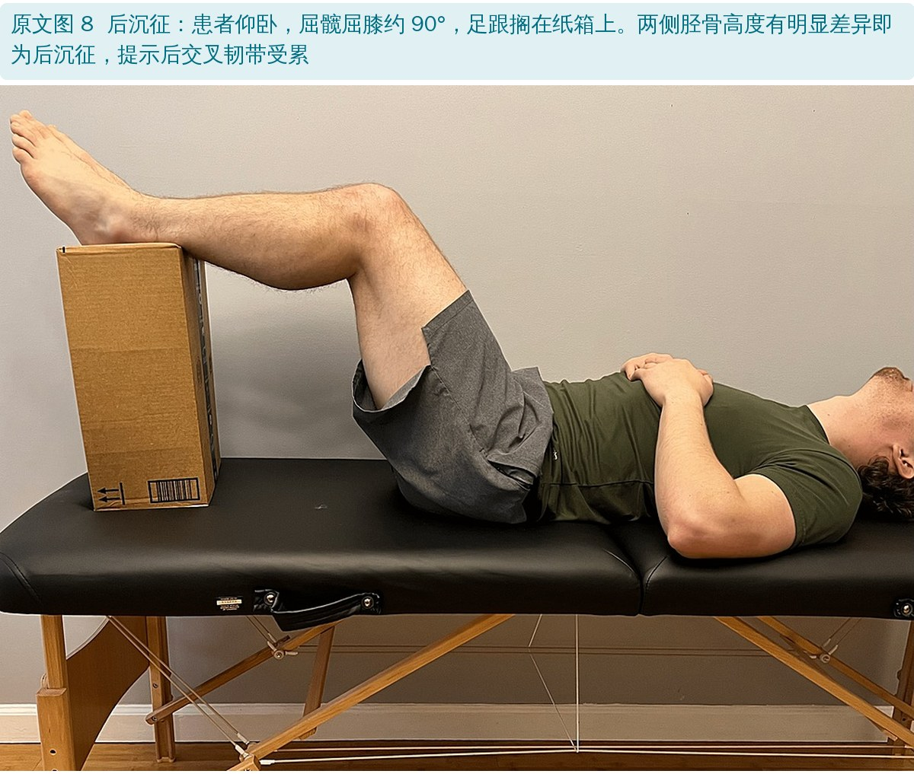
🔖原文图 8：后沉征
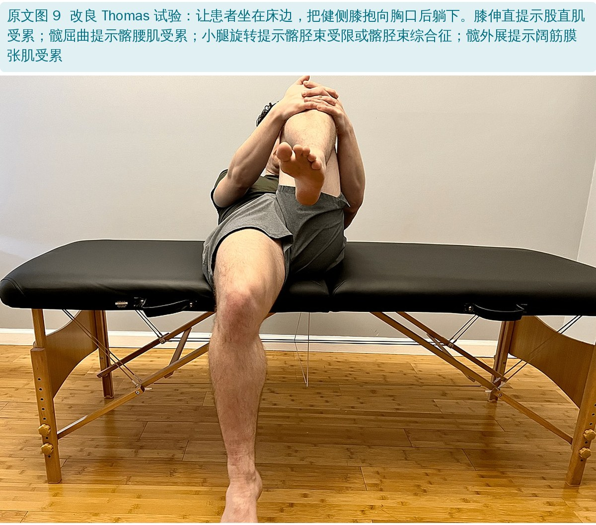
🔖原文图 9：改良 Thomas 试验
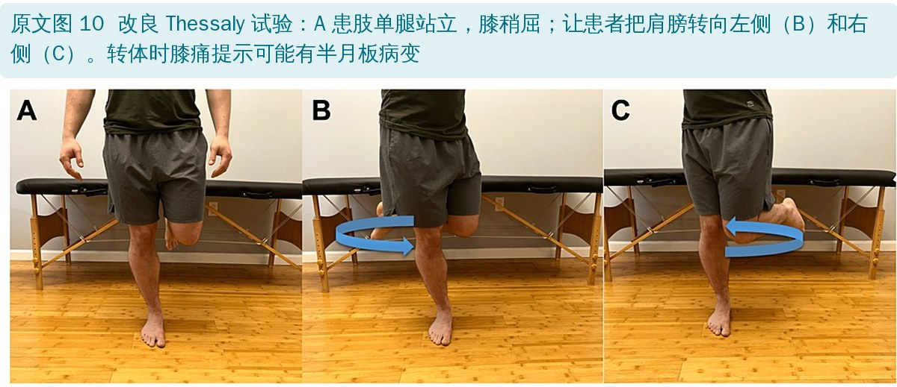
🔖原文图 10：改良 Thessaly 试验
综合病史和查体，把膝痛分成急症和非急症：急症引导到合适的急诊或线下就诊，非急症开始保守治疗并安排随访。
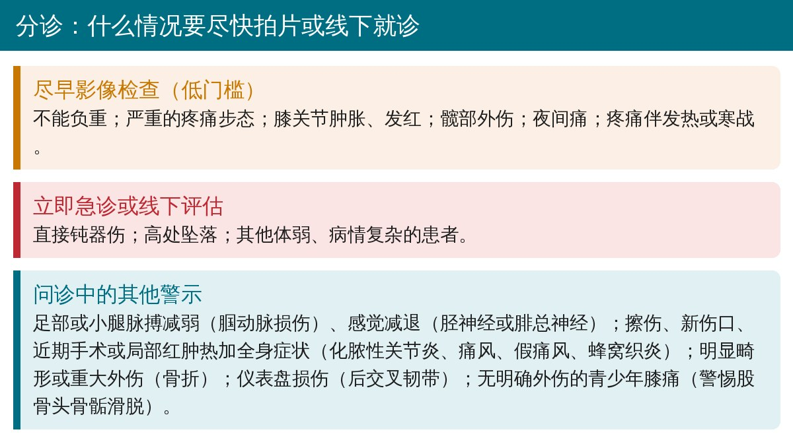
🔖需要尽快影像检查或线下就诊的情况（编者根据原文整理）
• 原文的“结果”就是上面这套流程和表 2 的问答清单（全文见文末附录），没有任何患者数据
• 讨论中唯一的准确性数字来自另一篇综述：远程膝关节评估与线下评估的平均一致率约 62%
• 作者认为远程检查可以快速分诊、减少等待和路途，患者和医生的满意度都较高；局限是需要联网设备和稳定网络、无法触诊和徒手检查、依赖患者自己操作
• 没有验证：所有“改良”检查（自己做外翻、自己做 Thessaly、自己摸髌骨等）都没有和线下查体或影像对照，准确性未知
• Thessaly 本身就有争议：作者引用的 Goossens 2015 显示 Thessaly 试验对半月板撕裂的诊断准确性并不高，改成患者单独做、只取一个屈膝角度，可靠性更难保证
• 62% 的一致率说明远程检查最多是“分诊工具”，不能替代线下查体
• 表 2 的“提示”多为经验判断：大量条目没有引用或引用与内容无关，不能当作诊断依据
• 优点：顺序合理（按体位减少折腾）、动作简单、照片清晰，问答表很实用，适合作为远程初诊和随访的检查清单
• 表 2 前半部分的图号全部错位：问“膝内翻或外翻”标图 1（实为关节线触诊），问“站立时膝更屈曲”标图 2（实为活动度），问“足是否平”标图 3（实为 J 征），浮髌试验标图 4（实为 Trendelenburg 步态），触诊膝外侧标图 5（实为深蹲）
• 内翻写成外翻：表 2 中“把膝向外弯”的阳性也写成“改良外翻试验阳性”；图 6 标题写成“改良内侧和外翻应力检查”，应为外翻和内翻
• 髌骨倾斜试验判断反了：表 2 说“能把髌骨外侧缘掀起”是阳性、提示外侧支持带紧张；实际上外侧支持带紧张时恰恰掀不起来
• 股四头肌回避步态描述反了：表 2 说“患膝走路时比健侧更屈曲”提示前交叉韧带损伤；而所引的 Andriacchi 研究描述的是股四头肌回避步态减少支撑期屈膝
• 关节线疼痛的意义前后不一：表 2 写骨关节炎、髌腱炎或髌股关节受累，图 1 图注写骨关节炎、髌腱炎或近端胫腓关节损伤；髌腱炎本身也不表现为关节线痛
• 屈膝范围两处不同：表 1 为 0°～140°，图 2 图注为约 120°～140°
• Q 角：原文要求从前面和后面估计 Q 角，但 Q 角只能从前面测
• 引用与内容不符：抗重力即“至少 3/5 级”、改良外翻试验、后沉征都引文献 1（一项髋膝置换后远程康复的试验方案）；浮髌试验引文献 12（钇-90 放射性滑膜切除）；胫骨与地面夹角引文献 5（内侧胫骨远端角测量）；讨论中“需要联网设备”引文献 7（前交叉韧带缺失膝的生物力学）
• “电话”还是“视频”：表 2 标题是“电话膝关节评估”，但几乎每一步都需要看视频
• 文章类型：标为“原创研究”，有方法和结果章节，但没有受试者和数据；伦理声明写“批准号 NA”
• 小错：illicit（应为 elicit）、innate（应为 initiate）、“provider's shoulder also assesses”（应为 should）、“Does his produce pain”；青少年无外伤膝痛列“病毒性腱鞘炎”，常见的应是髋关节一过性滑膜炎
• 提前发准备清单：穿短裤、准备椅子或床、一个纸箱或凳子、能拍到全身的位置，必要时请家人帮忙扶和拍
• 按体位顺序：站（视诊、深蹲、单腿蹲、提踵、步态、内外翻、Thessaly）→ 坐（活动度、J 征、Noble、伸膝抗重力）→ 躺（桥式、侧抬腿、后沉征、Thomas）
• 力量只能判断“至少 3 级”：功能动作（深蹲、单腿蹲、单腿桥、单腿提踵）的质量和两侧对比更有价值
• 先分诊，再诊断：不能负重、明显肿胀发红、发热、夜间痛、高能量外伤、脉搏或感觉异常——尽快拍片或线下就诊
• 改良特殊检查只能作为线索，不要据此下结论；可疑结构性损伤仍需线下查体和影像确认
| 环节 | 问患者 / 让患者做 | 回答 | 提示 |
|---|---|---|---|
| 视诊 | 有没有凹陷、肿胀、瘀青或发红的地方？ | 是 | 凹陷：可能肌萎缩；肿胀、瘀青、发红：可能受伤后瘀斑 |
| 视诊 | 和另一侧比，患膝有没有明显畸形？ | 是 | 可能骨折 |
| 视诊 | 从侧面看，是否一侧膝比另一侧伸得更直？ | 是 | 可能全身韧带松弛、高位髌骨、过伸伤或后交叉韧带扭伤 |
| 视诊 | 是否一条腿看起来比另一条长？ | 是 | 可能足过度旋前、外八字或步态周期改变，步行时压力增加；可能髂骨旋转导致功能性短腿 |
| 视诊 | 从前面看，膝是向内弯还是向外弯？（图 1*） | 是 | 可能膝内翻（O 型腿）或膝外翻（X 型腿），使膝内或外侧间室受压增加、退变加速；膝外翻可能易发外侧髌股疼痛综合征、髌骨软化或软骨损伤 |
| 视诊 | 站立时膝是否更弯？坐着时膝关节是否“方”了？（图 2*） | 是 | 可能骨关节炎 |
| 视诊 | 坐位看，一侧小腿是否比另一侧更内旋？ | 是 | 可能胫骨内旋导致膝负荷过大或改变；可能胫骨躯体功能障碍 |
| 视诊 | 从后面看，脚是平的吗？（图 3*） | 是 | “脚趾过多”征提示疼痛可能来自足过度旋前导致的力学和受力分布改变 |
| 触诊 | 伸直腿，一只手放在髌骨上方，另一只手轻拍膝盖，有漂浮感吗？（图 4*） | 是 | 浮髌试验阳性：可能滑膜积液、关节积血、内侧皱襞综合征、关节囊破裂或腘窝肿胀 |
| 触诊 | 摸膝前方，有没有凹陷、肿胀、压痛，或大腿前侧肌肉变少？ | 是 | 肿胀：可能滑膜积液或瘀斑；压痛：可能肌腱炎或肌腱病；剧痛伴肌肉减少：可能股四头肌腱断裂 |
| 触诊 | 直接按髌骨上方和下方，哪里痛？ | 是 | 髌骨下方痛：可能髌腱损伤 |
| 触诊 | 按膝内侧痛吗？ | 是 | 可能内侧副韧带损伤、鹅足滑囊炎或骨关节炎 |
| 触诊 | 按膝外侧痛吗？（图 5*） | 是 | 可能髌股关节痛、髂胫束综合征、腓骨头躯体功能障碍或腓总神经卡压 |
| 触诊 | 按大腿骨和小腿骨之间的关节线痛吗？（图 1） | 是 | 可能骨关节炎、髌腱炎或髌股关节受累 |
| 活动度 | 坐位能完全伸直膝吗？（图 2） | 否 | 可能腘绳肌紧张、受限，或肌肉抑制、保护 |
| 活动度 | 伸膝时髌骨走的是“C”形还是“J”形？（图 3） | C 形或 J 形 | J 形（J 征）：可能髌骨不稳 |
| 活动度 | 坐位能完全屈膝吗？（图 2） | 否 | 屈曲早期受限：可能髌骨远端病变；90° 受限：可能髌骨近端病变；硬性止点：可能骨关节炎或关节游离体 |
| 活动度 | 坐位能把小腿完全内旋吗？ | 否 | 可能胫骨躯体功能障碍 |
| 活动度 | 坐位能把小腿完全外旋吗？ | 否 | 可能胫骨躯体功能障碍 |
| 功能与步态 | 走路时脚会“啪”地拍地吗？ | 是 | 可能腓骨头处或胫腓联合处腓总神经卡压 |
| 功能与步态 | 走路时髋会往下掉吗？（图 4） | 是 | Trendelenburg 征阳性：可能患侧臀中肌无力 |
| 功能与步态 | 走路时痛吗？ | 是 | 疼痛步态 |
| 功能与步态 | 走路时患膝比健侧更屈曲吗？ | 是 | 可能股四头肌回避步态：通过把主动稳定交给腘绳肌来减少胫骨前移的代偿模式，提示前交叉韧带损伤 |
| 功能与步态 | 上下楼时膝痛加重吗？ | 是 | 可能髌股关节受累或髌骨软化 |
| 功能与步态 | 徒手深蹲时，有没有疼痛、膝前移、膝内扣或髋偏移？（图 5） | 是 | 疼痛：可能髌股关节受累；膝过度前移：可能松弛；膝内扣伴痛：可能内侧副韧带受累及患肢无力；髋偏移：偏离侧无力或受限导致疼痛 |
| 功能与步态 | 左 / 右腿单腿站，慢慢单腿蹲，痛吗？不稳吗？ | 是 | 可能髋稳定肌无力、髌股疼痛综合征或腰椎神经根病 |
| 肌力 | 抗重力能完全伸膝吗？ | 是 | 股四头肌至少 3/5 级 |
| 肌力 | 抗重力能完全屈膝吗？ | 是 | 腘绳肌至少 3/5 级 |
| 肌力 | 抗重力能做提踵吗？ | 是 | 跖屈肌至少 3/5 级 |
| 肌力 | 侧卧，能把上面的腿抬起来吗？ | 是 | 髋外展肌至少 3/5 级 |
| 肌力 | 仰卧，能做双腿和单腿桥吗？ | 是 | 髋伸肌至少 3/5 级 |
| 特殊检查 | 站立，能把膝往内弯吗？痛吗？（图 6） | 是 | 改良外翻试验阳性：可能内侧副韧带扭伤或撕裂，或后内侧关节囊、后斜韧带损伤 |
| 特殊检查 | 站立，能把膝往外弯吗？痛吗？（图 6） | 是 | 原文写“改良外翻试验阳性”（应为内翻）：可能外侧副韧带、外侧关节囊韧带或弓状—腘肌复合体损伤 |
| 特殊检查 | 拇指按在膝外侧上方，然后伸直膝，痛吗？（图 7） | 是 | 改良 Noble 挤压试验阳性：可能髂胫束综合征或腓骨头功能障碍 |
| 特殊检查 | 仰卧，屈髋屈膝 90°，脚踝搁在小支撑物上，一侧膝有没有明显下沉？（图 8） | 是 | 改良后沉征阳性：胫骨异常移位，可能后交叉韧带断裂或损伤 |
| 特殊检查 | 伸直腿，能把髌骨外侧从股骨上掀起来吗？ | 是 | 原文写“髌骨倾斜试验阳性，提示外侧支持带或髂胫束紧张；可能髌骨软化或软骨病变” |
| 特殊检查 | 伸直膝，用手向下压髌骨，痛吗？ | 是 | 髌骨挤压试验阳性：提示髌股关节退变 |
| 特殊检查 | 坐床边，把一侧膝抱向胸口后躺平。伸直那侧髋痛吗？有没有屈髋、伸膝、小腿旋转或髋外旋？（图 9） | 是 | 改良 Thomas 试验阳性：膝伸直，可能股直肌；髋屈曲，可能髂腰肌；小腿旋转，可能髂胫束受限或综合征；髋外展，可能阔筋膜张肌受累 |
| 特殊检查 | 单腿站、膝稍屈，躯干向左、右转，哪个方向痛？（图 10） | 是 | 改良 Thessaly 试验阳性：可能半月板病变 |
| 特殊情况 | 膝周感觉减退或过敏吗？ | 是 | 可能腓总神经或胫神经受压 |
| 特殊情况 | 膝里有摩擦感吗？ | 是 | 可能骨关节炎、半月板退变或关节游离体 |
| 特殊情况 | 膝有要打软的感觉吗？ | 是 | 可能韧带或半月板损伤 |
| 特殊情况 | 有过仪表盘损伤吗？ | 是 | 可能后交叉韧带扭伤或撕裂 |
| 特殊情况 | 患肢足部、小腿感觉和脉搏正常吗？ | 否 | 脉搏减弱：可能腘动脉损伤；感觉减退：可能胫神经或腓总神经受累 |
| 特殊情况 | 患者是无明确外伤机制的青少年膝痛吗？ | 是 | 可能股骨头骨骺滑脱或病毒性腱鞘炎 |
| 特殊情况 | 膝部有擦伤、新伤口、近期手术，或皮温升高、肿胀、发红？有全身症状吗？ | 是 | 可能化脓性关节炎、痛风性关节炎、假痛风或蜂窝织炎 |
| 特殊情况 | 有过明显外伤，如跌倒或钝器伤吗？ | 是 | 可能骨折 |
原文表 2：远程膝关节评估——问题 / 指令及其临床意义（中文翻译）
*原文该处标注的图号与图内容不符，详见“原文里对不上的地方”。
欢迎关注骨科康复小黄公众号，获取更多物理治疗的专业知识！
📄参考文献：
Vomer RP II, York E, Rayghan LS, Jethwa T, Montero DP, Nguyen CQ, Pujalte GGA. Telemedicine Examination of the Knee. Cureus. 2023;15(4):e37009. doi:10.7759/cureus.37009
原文以 CC BY 4.0 协议开放获取，版权归原作者所有。本文为学术交流用的中文解读：图 1～10 引自原文并配中文图注，流程卡和分诊卡为编者根据原文整理，表格为中文翻译。如有侵权请联系删除。